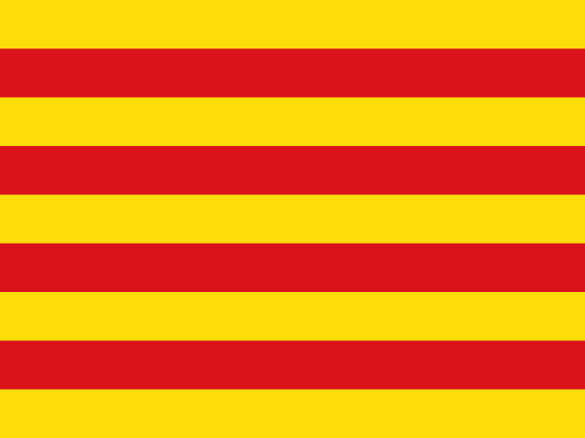

⚠️ Precaució / Precaución / Caution / Vorsicht / Attention

CATALÀ: Prototip de navegació. Mapa amb ZBE (Zones de Baixes Emissions), permeses només a vehicles autoritzats o amb distintiu zero emissions. Circuleu amb precaució.
 ESPAÑOL: Prototipo de navegación. Mapa con ZBE (Zonas de Bajas Emisiones),
permitidas solo a vehículos autorizados o con distintivo zero emisiones. Circule con precaución.
ESPAÑOL: Prototipo de navegación. Mapa con ZBE (Zonas de Bajas Emisiones),
permitidas solo a vehículos autorizados o con distintivo zero emisiones. Circule con precaución.
 ENGLISH: Navigation prototype. Map includes ZBE (Low Emission Zones),
restricted to authorized or zero-emission vehicles. Drive with caution.
ENGLISH: Navigation prototype. Map includes ZBE (Low Emission Zones),
restricted to authorized or zero-emission vehicles. Drive with caution.
 DEUTSCH: Navigationsprototyp. Karte mit ZBE (Umweltzonen), nur für
autorisierte oder emissionsfreie Fahrzeuge erlaubt. Bitte vorsichtig fahren.
DEUTSCH: Navigationsprototyp. Karte mit ZBE (Umweltzonen), nur für
autorisierte oder emissionsfreie Fahrzeuge erlaubt. Bitte vorsichtig fahren.
 FRANÇAIS: Prototype de navigation. Carte incluant les ZBE (Zones à Faibles
Émissions), réservées aux véhicules autorisés ou zéro émission. Roulez avec prudence.
FRANÇAIS: Prototype de navigation. Carte incluant les ZBE (Zones à Faibles
Émissions), réservées aux véhicules autorisés ou zéro émission. Roulez avec prudence.